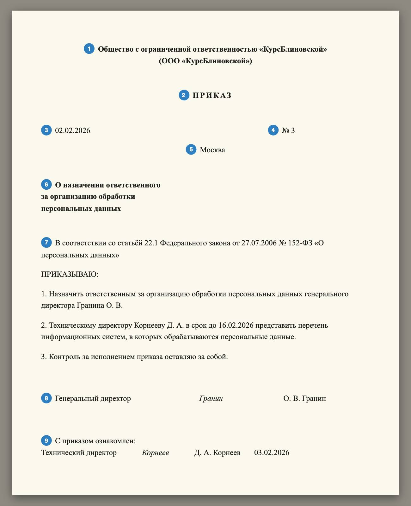

Справочник «Стандарты и сертификаты» · тема 3
Глава 3
ГОСТ Р 7.0.97-2016:
оформление документов
Приказы, акты, протоколы и письма оформляют по одному стандарту — ГОСТ Р 7.0.97-2016. В главе разобрано, на какие документы он распространяется, из каких реквизитов состоит приказ и какие правила записи даты, заголовка и подписи в нём установлены.
- Документы
- ГОСТ Р 7.0.97-2016 · ГОСТ Р 7.0.8-2013
- Уровень
- Базовый
- Где встречается
- Приказы, акты, протоколы, служебные письма
- Зачем это знать
- Чтобы оформить документ, который примут без возврата
§1На что распространяется стандарт
Организационно-распорядительные документы — документы, которыми организация оформляет управление: уставы, положения, приказы, распоряжения, протоколы, акты, письма, справки. ГОСТ Р 7.0.97-2016 задаёт для них состав реквизитов, правила их оформления и расположение на листе. Стандарт действует и для бумажных, и для электронных документов.
Реквизит — обязательный элемент оформления: дата, номер, подпись, заголовок. Стандарт перечисляет 30 реквизитов. В одном документе все тридцать не встречаются: набор зависит от вида документа. Термины делопроизводства определяет ГОСТ Р 7.0.8-2013.
§2Из чего состоит приказ

| № | Элемент | Правило |
|---|---|---|
| 1 | наименование организации | полное, как в уставе; сокращённое — в скобках ниже |
| 2 | наименование вида документа | прописными буквами: ПРИКАЗ |
| 3 | дата документа | дата подписания: 02.02.2026 или 2 февраля 2026 г. |
| 4 | регистрационный номер | порядковый номер в пределах года |
| 5 | место составления | населённый пункт; не указывают, если он есть в названии организации |
| 6 | заголовок к тексту | отвечает на вопрос «о чём?»: «О назначении ответственного…» |
| 7 | текст | основание, затем слово ПРИКАЗЫВАЮ и пронумерованные пункты с исполнителем и сроком |
| 8 | подпись | должность, личная подпись, инициалы и фамилия |
| 9 | запись об ознакомлении | подпись работника и дата; делается на приказе или в листе ознакомления |
§3Поля, дата и подпись
Стандарт задаёт наименьшие размеры полей листа: левое — 20 мм, правое — 10 мм, верхнее и нижнее — по 20 мм. Если документ хранится дольше десяти лет, левое поле делают не меньше 30 мм.
| Что | Правильно | Неправильно |
|---|---|---|
| Дата цифрами | 05.06.2026 | 5.6.26 · 2026-06-05 · 06/05/2026 |
| Дата словами | 5 июня 2026 г. | «05» июня 2026 года |
| Инициалы в подписи | О. В. Гранин | Гранин О. В. |
| Заголовок | О назначении ответственного | Назначение ответственного |
| Ссылка на закон в тексте | Федеральный закон от 27.07.2006 № 152-ФЗ | закон о персональных данных |
В подписи инициалы стоят перед фамилией. В адресате письма порядок обратный: «Гранину О. В.».
ООО «КурсБлиновской» Директору школы «Сто баллов» ул. Образцовая, д. 1, Москва, 101000 Иванову И. И. support@kursblinovskoy.example 05.10.2026 № 41-исх На № 17 от 02.10.2026 О перенесении сроков приёмки электронного журнала Уважаемый Иван Иванович! В связи с плановыми работами на площадке хостинга 12.10.2026 просим перенести приёмочные испытания электронного журнала на 14.10.2026. Приложение: график испытаний на 2 л. в 1 экз. Генеральный директор (подпись) О. В. Гранин Сафина Алина Ринатовна +7 495 000-00-00
Сверху вниз: бланк организации, адресат в дательном падеже, дата и номер письма, ссылка на письмо, на которое отвечают, заголовок, обращение, текст, приложение, подпись и отметка об исполнителе с телефоном.
§4Частые ошибки
§5Проверьте себя
- Какие документы называют организационно-распорядительными?
- Сколько реквизитов перечисляет ГОСТ Р 7.0.97-2016? Все ли они есть в приказе?
- Как по стандарту записывают дату цифрами и словами?
- Где в подписи стоят инициалы: перед фамилией или после?
- Какие размеры полей листа задаёт стандарт?
организацияПРИКАЗдата и номерзаголовок «О…»текст, подпись05.06.20265 июня 2026 г.О. В. Гранин — в подписиГранину О. В. — в адресателевое поле 20 ммправое 10 ммверхнее и нижнее 20 ммСправочник «Стандарты и сертификаты» · глава 3Макаров Максим Николаевич